A seguir, temos as quantidades de respostas recebidas em cada pergunta; ao fim da página, você pode conferir os
gráficos gerados a partir das respos obtidas.
Confira abaixo a quantidade de votos para cada pergunta direcionadora:
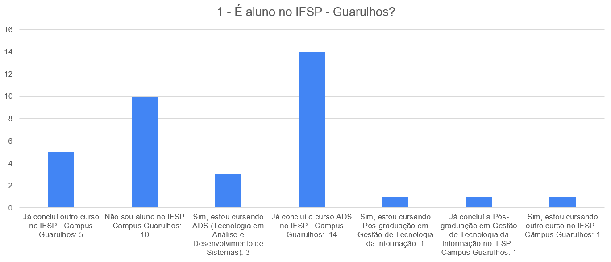
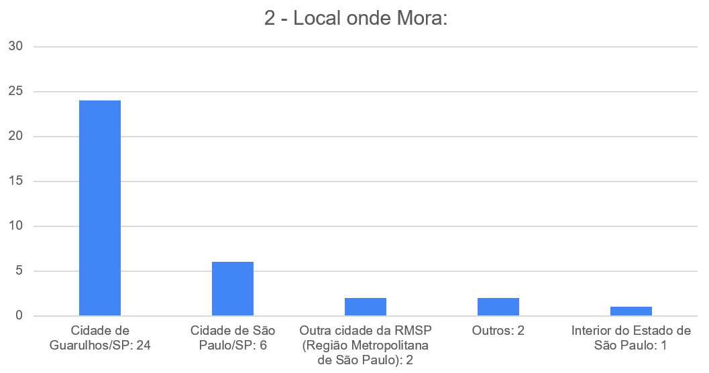
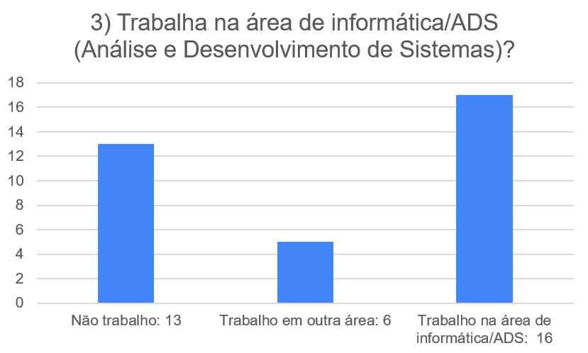
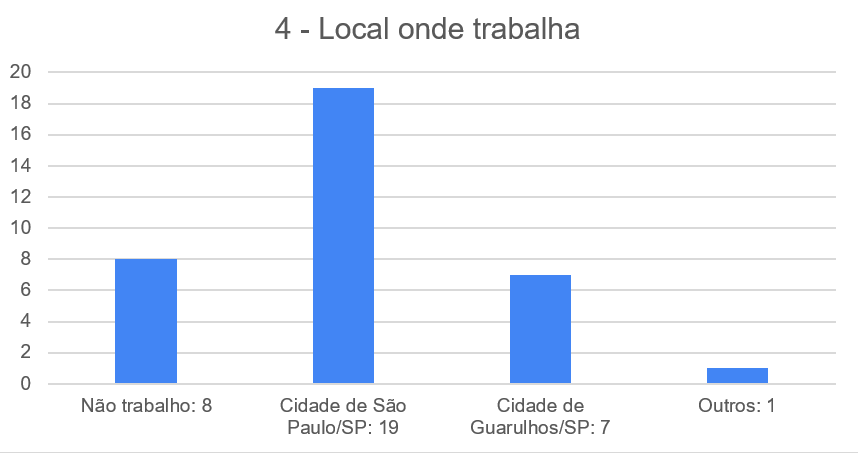
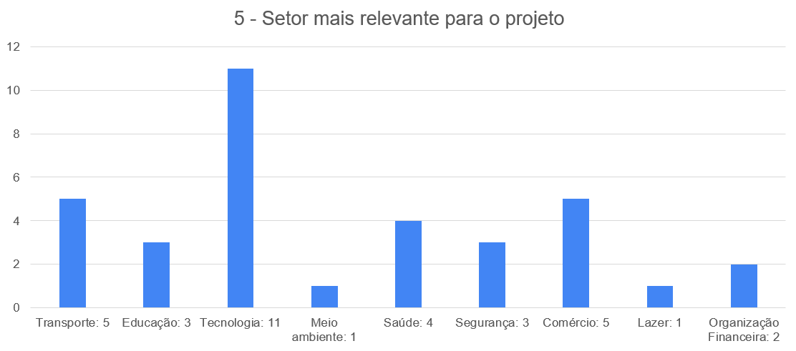
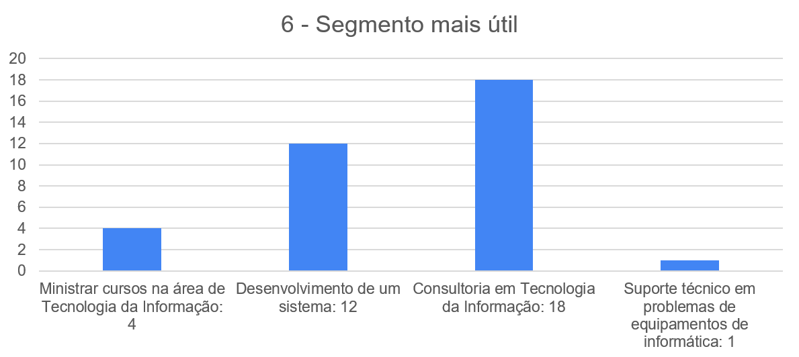
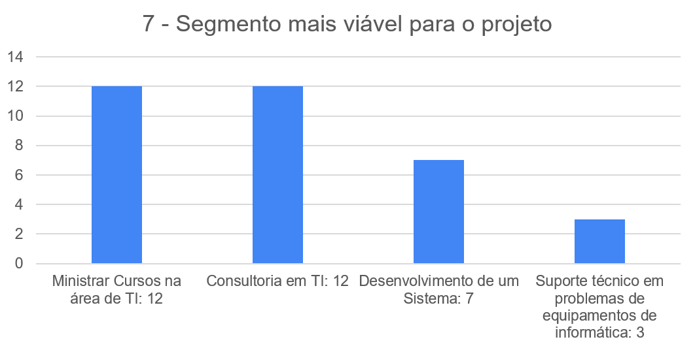
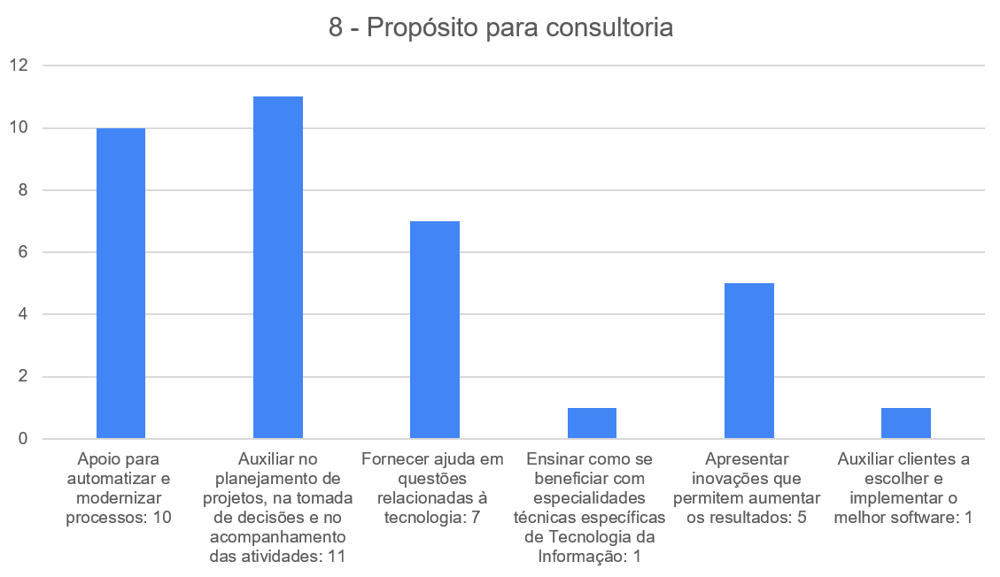
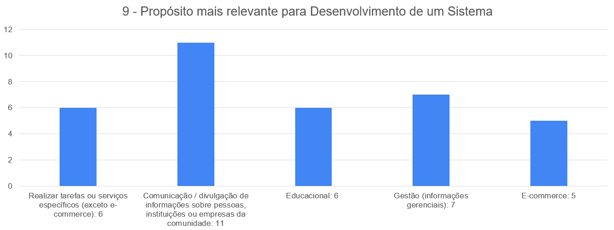
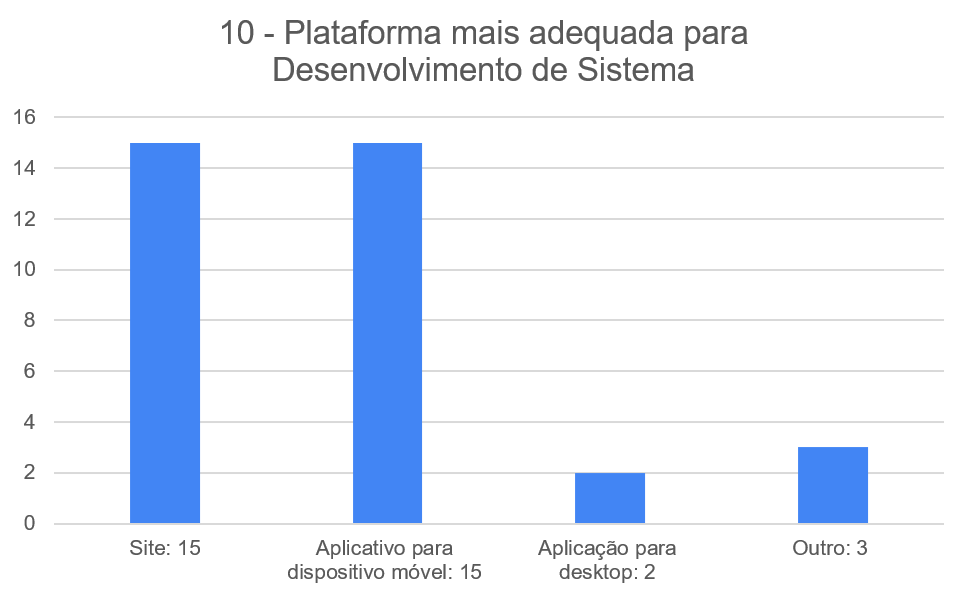
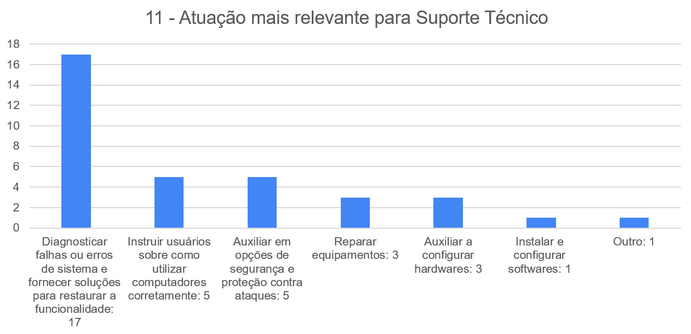
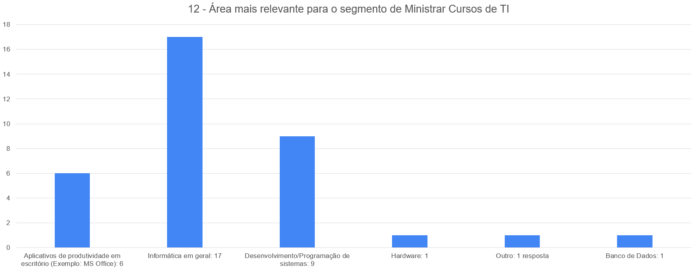
Agradecemos a todos os envolvidos no projeto até o momento e a todos que participaram da pesquisa de
alguma forma.